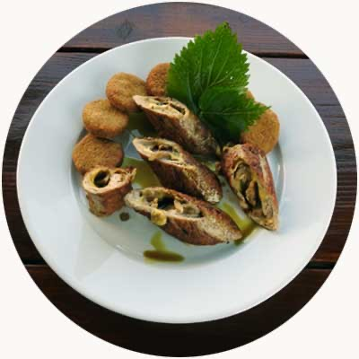
Lungić Kozjak
Lungić punjen kozjim sirom i šljivama u umaku od gljiva – meso vlastitog uzgoja, obogaćeno prirodnim sastojcima.
19,00 €Klet Kozjak je idilično mjesto za gurmanske delicije i opuštajući odmor. Kuhamo tradicionalne zagorske specijalitete od svježih namirnica iz vlastite proizvodnje, uz vino iz vlastitog podruma.
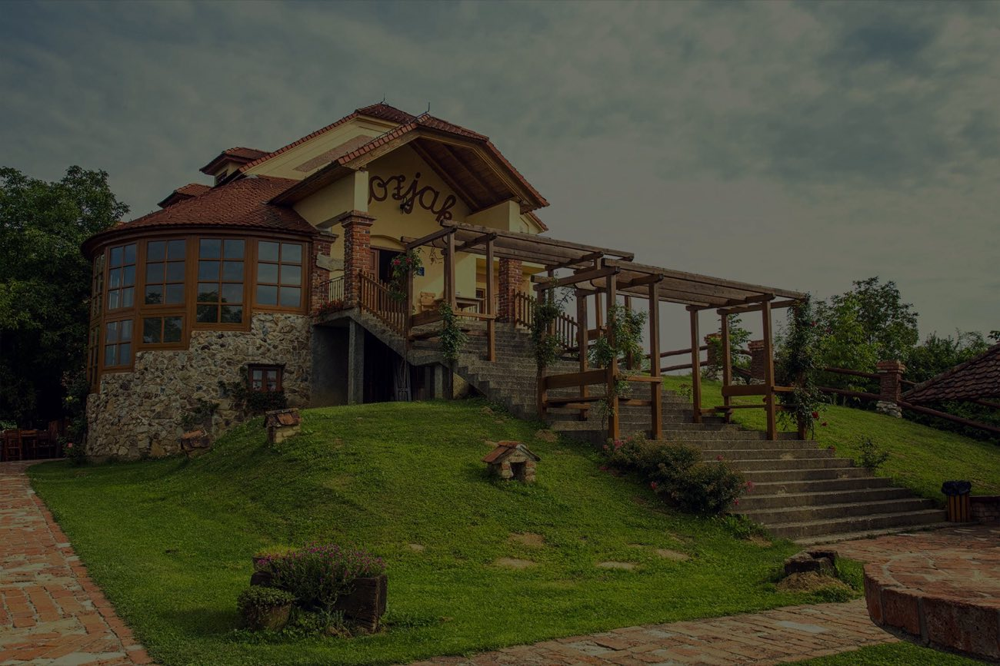
Klet Kozjak dočekuje goste
sudionika u dvorani za seminare
sorte vina iz vlastite proizvodnje
domaća pečenja uz najavu: raca, kokot, teletina, jarić

Lungić punjen kozjim sirom i šljivama u umaku od gljiva – meso vlastitog uzgoja, obogaćeno prirodnim sastojcima.
19,00 €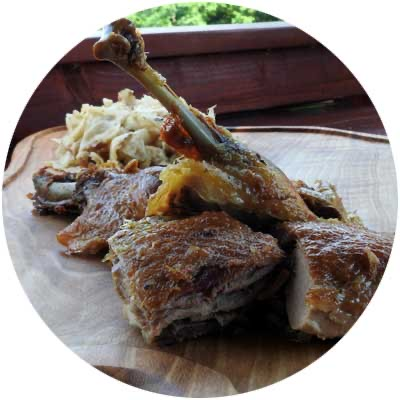
Ako se zagorsko kulinarstvo može predstaviti jednim jelom, onda je to sočna patka s mlincima. S njom nema pogreške.
pečenje uz najavu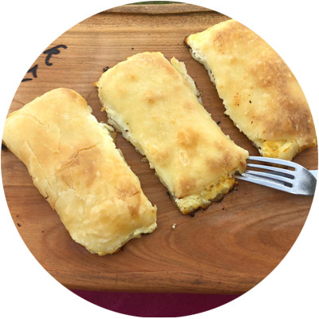
Ima li nešto slađe od domaćih štrukla sa sirom? Kuhani, pečeni ili zapečeni u medenici – uvjerite se sami.
od 8,00 €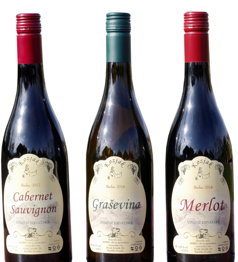
Svježe namirnice iz vlastite proizvodnje i dugogodišnje iskustvo temelj su naše kuhinje. Ponudu upotpunjava vino vlastite proizvodnje, a ambijent odiše tradicijom zagorskog krajolika.
Specijaliteti poput Lungića Kozjak – od mesa vlastitog uzgoja.
Vino s etiketom Kozjak, proizvedeno i punjeno na imanju.
Upotpunjuju domaću ponudu kleti.
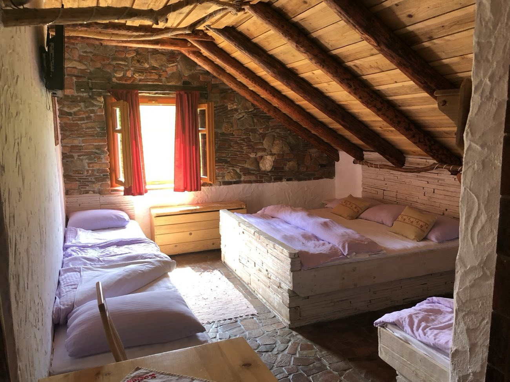
Smještaj u Kozjaku pruža vam priliku da se odmorite i opustite okruženi prirodom Hrvatskog zagorja. Dopustite nam da vas razmazimo tijekom boravka.
Odmorite duh i tijelo okruženi zelenilom.
Cijela ponuda restorana na raspolaganju tijekom boravka.
Igralište prepuno zabavnih sadržaja za najmlađe.
Povijest, biciklizam ili ekstremni sportovi – pitajte nas za preporuke.
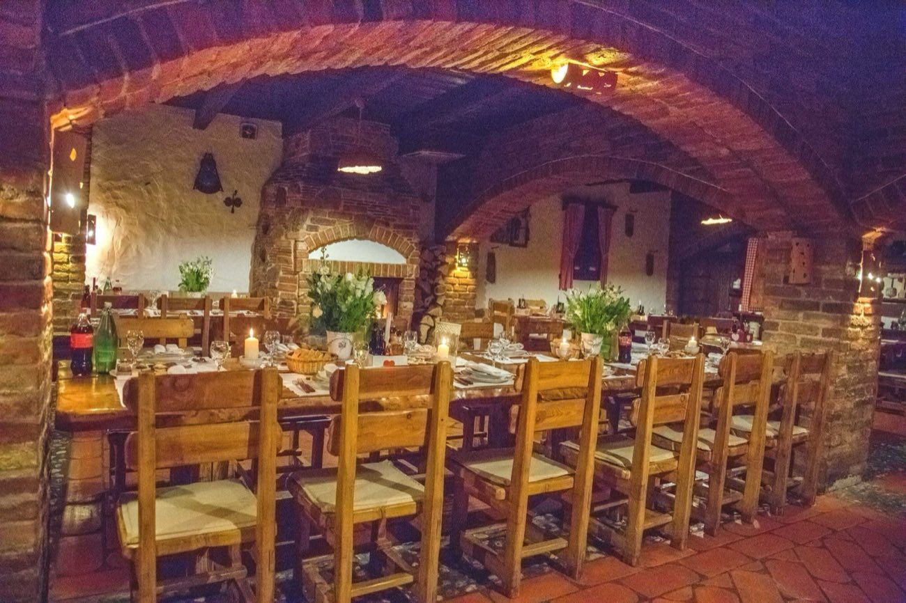

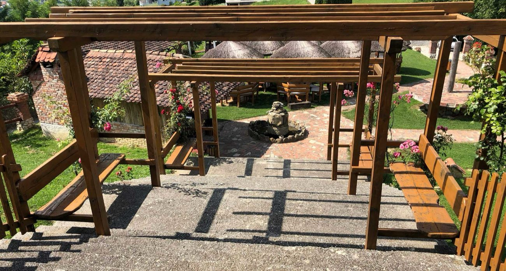
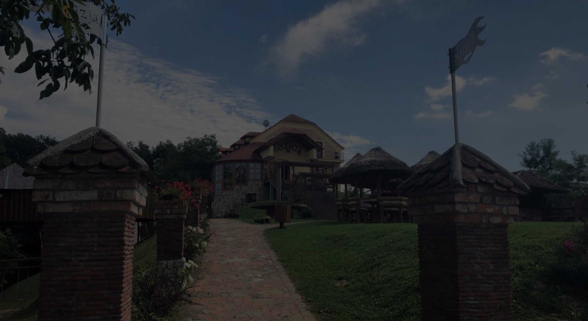
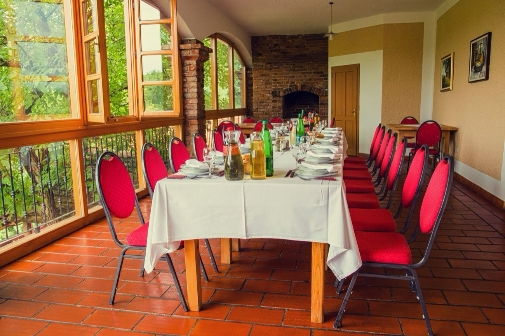
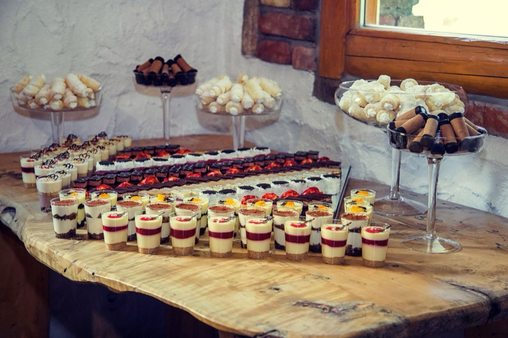
Da. Patka (raca), kokot, teletina i jarić pripremaju se uz prethodnu najavu, a naplaćuju se po kilogramu. Najavite ih telefonom ili u napomeni upita.
Da. Na jelovniku su štrukli od sira, štrudla od višanja i štrudla od jabuka bez glutena.
Pečeni štrukli, zapečeni štrukli u medenici i štrudle pripremaju se svježe, pa se na njih čeka oko pola sata.
Do 90 sudionika, ovisno o načinu slaganja stolova. Na raspolaganju su flip chart, LCD projektor s projekcijskim platnom i bežični internet.
Da, uz kuću je dječje igralište, a na jelovniku je dječji menu (npr. „Mač baruna Trenka” i „Podrapane gače”).
Za upite o rezervaciji, događanjima i smještaju nazovite nas ili pošaljite upit.
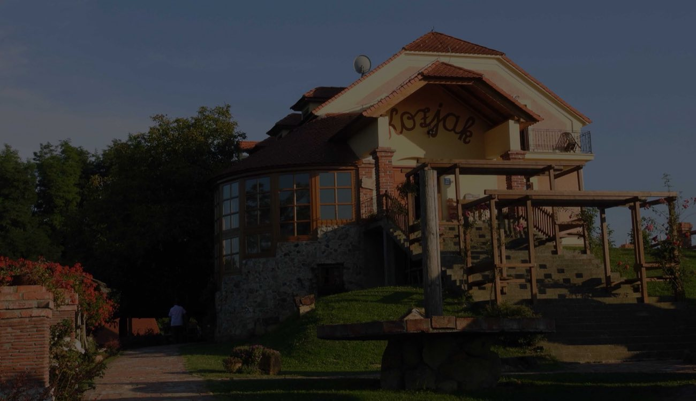